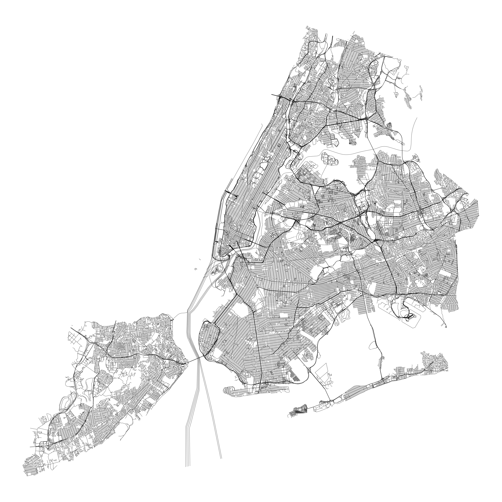

Provides an sf object containing the New York City street centerline dataset from NYC Open Data.
Installation
You can install the development version of nycstreets from GitHub with:
# install.packages("pak")
pak::pak("kjhealy/nycstreets")Alternatively, install this package from my r-universe:
install.packages(
"nycstreets",
repos = c("https://kjhealy.r-universe.dev", "https://cloud.r-project.org")
)Including https://cloud.r-project.org ensures dependencies on CRAN are resolved automatically.
The dataset
library(tidyverse)
#> ── Attaching core tidyverse packages ──────────────────────── tidyverse 2.0.0 ──
#> ✔ dplyr 1.2.1 ✔ readr 2.2.0
#> ✔ forcats 1.0.1 ✔ stringr 1.6.0
#> ✔ ggplot2 4.0.2 ✔ tibble 3.3.1
#> ✔ lubridate 1.9.5 ✔ tidyr 1.3.2
#> ✔ purrr 1.2.1
#> ── Conflicts ────────────────────────────────────────── tidyverse_conflicts() ──
#> ✖ dplyr::filter() masks stats::filter()
#> ✖ dplyr::lag() masks stats::lag()
#> ℹ Use the conflicted package (<http://conflicted.r-lib.org/>) to force all conflicts to become errors
library(sf)
#> Linking to GEOS 3.13.0, GDAL 3.8.5, PROJ 9.5.1; sf_use_s2() is TRUE
library(nycstreets)
nyc_streets_sf
#> Simple feature collection with 122054 features and 65 fields
#> Geometry type: MULTILINESTRING
#> Dimension: XY
#> Bounding box: xmin: 913351.6 ymin: 120769.2 xmax: 1067379 ymax: 272691.1
#> Projected CRS: NAD83 / New York Long Island (ftUS)
#> First 10 features:
#> physicalid l_low_hn l_high_hn r_low_hn r_high_hn l_zip r_zip status
#> 1 46810 901 999 900 998 11230 11230 2
#> 2 86757 2501 2599 2500 2598 10469 10469 2
#> 3 84282 22-001 22-099 22-000 22-098 11105 11105 2
#> 4 79741 79 107 78 100 10013 10013 2
#> 5 184200 0 0 74 86 10306 10306 2
#> 6 191409 2 98 1 99 10023 10023 2
#> 7 170796 <NA> <NA> <NA> <NA> 10458 10458 2
#> 8 31380 113-001 113-099 113-000 113-098 11429 11429 2
#> 9 10217 161-001 161-099 161-000 161-098 11365 11365 2
#> 10 16336 22-001 22-025 22-000 22-026 11691 11691 2
#> bike_lane trafdir rw_type pre_type post_type objectid fcc l_blockfac
#> 1 <NA> FT 1 AVE <NA> 42563 <NA> 1822608708
#> 2 <NA> TW 1 <NA> AVE 78537 <NA> 1522607532
#> 3 <NA> TF 1 <NA> ST 76298 <NA> 102261264
#> 4 <NA> FT 1 <NA> ST 72173 <NA> 1222605034
#> 5 <NA> TW 1 <NA> AVE 115877 <NA> 1722613316
#> 6 <NA> FT 1 <NA> ST 118754 <NA> 1222600676
#> 7 <NA> NV 6 <NA> PATH 110562 <NA> 1522610431
#> 8 <NA> TW 1 <NA> ST 28373 <NA> 72264340
#> 9 <NA> TW 1 <NA> AVE 9109 <NA> 82262164
#> 10 <NA> TW 1 <NA> AVE 14570 <NA> 12262996
#> r_blockfac avgtravtim rwjurisdic nominaldir accessible nonped boroughcod
#> 1 1822600714 NA <NA> <NA> <NA> <NA> 3
#> 2 1522608941 NA <NA> <NA> <NA> <NA> 2
#> 3 102265239 NA <NA> <NA> <NA> <NA> 4
#> 4 1222601248 NA <NA> <NA> <NA> <NA> 1
#> 5 1722609883 NA <NA> <NA> <NA> <NA> 5
#> 6 1222606129 NA <NA> <NA> <NA> <NA> 1
#> 7 1522601577 NA <NA> <NA> <NA> <NA> 2
#> 8 72268057 NA <NA> <NA> <NA> <NA> 4
#> 9 82261112 NA <NA> <NA> <NA> <NA> 4
#> 10 12263118 NA <NA> <NA> <NA> <NA> 4
#> borough_in seglocstat sandist_in lsubsect rsubsect continuous twisted_pa
#> 1 <NA> X <NA> 6E 6E <NA> N
#> 2 <NA> <NA> <NA> 2C 2C <NA> N
#> 3 <NA> <NA> <NA> 2E 2E <NA> N
#> 4 <NA> <NA> <NA> 3B 3B <NA> N
#> 5 <NA> <NA> <NA> 1D 1D <NA> N
#> 6 <NA> <NA> <NA> 1A 1A <NA> N
#> 7 <NA> H <NA> <NA> <NA> <NA> N
#> 8 <NA> <NA> <NA> 4C 4C <NA> N
#> 9 <NA> X <NA> 2E 2E <NA> N
#> 10 <NA> <NA> <NA> 3D 3D <NA> N
#> posted_spe segmentlen streetwidt streetwi_2 special_di fire_lane date_creat
#> 1 25 260.1442 34 <NA> <NA> <NA> 2007-11-29
#> 2 25 889.7205 32 <NA> <NA> <NA> 2007-11-29
#> 3 25 689.1536 32 <NA> <NA> <NA> 2007-11-29
#> 4 25 298.8967 34 <NA> <NA> <NA> 2007-11-29
#> 5 25 415.1483 25 <NA> <NA> <NA> 2007-11-29
#> 6 25 665.2489 50 <NA> <NA> <NA> 2007-11-29
#> 7 NA 359.6573 12 <NA> <NA> <NA> 2015-12-15
#> 8 25 519.6650 30 <NA> <NA> <NA> 2007-11-29
#> 9 25 262.1672 40 <NA> <NA> <NA> 2007-11-29
#> 10 25 295.9581 24 <NA> <NA> <NA> 2007-11-29
#> time_creat date_modif time_modif within_bnd truck_rout collection
#> 1 00:00:00.000 2020-08-28 20:49:50.000 <NA> <NA> <NA>
#> 2 00:00:00.000 2024-04-10 13:15:28.000 <NA> <NA> <NA>
#> 3 00:00:00.000 2017-03-17 09:30:01.000 <NA> <NA> F
#> 4 00:00:00.000 2017-03-17 10:04:49.000 <NA> <NA> <NA>
#> 5 00:00:00.000 2025-10-24 14:30:55.000 <NA> <NA> <NA>
#> 6 00:00:00.000 2021-04-06 07:50:19.000 <NA> <NA> <NA>
#> 7 11:04:01.000 2015-12-22 00:00:00.000 <NA> <NA> <NA>
#> 8 00:00:00.000 2024-04-10 13:15:28.000 <NA> <NA> <NA>
#> 9 00:00:00.000 2020-08-28 20:49:50.000 <NA> <NA> <NA>
#> 10 00:00:00.000 2024-04-10 13:15:28.000 <NA> <NA> <NA>
#> from_level to_level_c b5sc snow_prior joinid bphys_id carto_disp
#> 1 13 13 314280 C <NA> NA <NA>
#> 2 13 13 240620 S <NA> NA <NA>
#> 3 13 13 410640 S <NA> NA <NA>
#> 4 13 13 124400 S <NA> NA <NA>
#> 5 13 13 520590 H <NA> NA <NA>
#> 6 13 13 134970 C <NA> NA <NA>
#> 7 13 13 200476 <NA> <NA> NA <NA>
#> 8 13 13 426340 S <NA> NA <NA>
#> 9 13 13 436400 C <NA> NA <NA>
#> 10 13 13 456590 S <NA> NA <NA>
#> number_tra number_par number_tot pre_modifi pre_direct post_direc post_modif
#> 1 2 2 4 <NA> <NA> <NA> <NA>
#> 2 2 2 4 <NA> <NA> <NA> <NA>
#> 3 1 2 3 <NA> <NA> <NA> <NA>
#> 4 1 2 3 <NA> <NA> <NA> <NA>
#> 5 2 1 3 <NA> <NA> <NA> <NA>
#> 6 2 2 4 <NA> W <NA> <NA>
#> 7 1 0 1 <NA> <NA> <NA> <NA>
#> 8 2 2 4 <NA> <NA> <NA> <NA>
#> 9 2 1 3 <NA> <NA> <NA> <NA>
#> 10 2 2 4 <NA> <NA> <NA> <NA>
#> full_stree bike_trafd shape_leng
#> 1 AVE N <NA> 104.3150
#> 2 HONE AVE <NA> 359.4566
#> 3 48 ST <NA> 277.5332
#> 4 LAIGHT ST <NA> 120.0458
#> 5 BROOK AVE <NA> 90.2888
#> 6 W 60 ST <NA> 267.5995
#> 7 FORDHAM UNIVERSITY PATH <NA> 221.1833
#> 8 210 ST <NA> 209.3626
#> 9 BOOTH MEMORIAL AVE <NA> 105.3209
#> 10 NAMEOKE AVE <NA> 118.6830
#> globalid segment_ty segment_2 street_nam
#> 1 cedc2dde-7e8b-4427-af4c-c7fe5174b2c7 <NA> <NA> N
#> 2 9c163e85-23ad-418a-a54c-40c8eef802e5 <NA> <NA> HONE
#> 3 fdccf94f-201f-4312-a96d-0c26d0fa7cfd <NA> <NA> 48
#> 4 bcbbb800-b963-45bf-804e-42f5ada6c207 <NA> <NA> LAIGHT
#> 5 d7f8c5d8-637b-4122-950f-faf2206c8561 <NA> <NA> BROOK
#> 6 27fcb089-c93b-41fa-bd6e-9700b811cb13 <NA> <NA> 60
#> 7 fd57d250-48c4-4cb1-ad58-067ebfa185b6 <NA> <NA> FORDHAM UNIVERSITY
#> 8 7505f297-28f8-4deb-90ed-623321c7ce58 <NA> <NA> 210
#> 9 d0e23276-a779-4fff-b47c-c345f4ea4c36 <NA> <NA> BOOTH MEMORIAL
#> 10 2504359f-bc51-4eab-b943-d5342ccbad45 <NA> <NA> NAMEOKE
#> stname_lab geometry
#> 1 AVE N MULTILINESTRING ((993887.4 ...
#> 2 HONE AVE MULTILINESTRING ((1023581 2...
#> 3 48 ST MULTILINESTRING ((1011659 2...
#> 4 LAIGHT ST MULTILINESTRING ((981322.2 ...
#> 5 BROOK AVE MULTILINESTRING ((950457.2 ...
#> 6 W 60 ST MULTILINESTRING ((989175.6 ...
#> 7 FORDHAM UNIVERSITY PATH MULTILINESTRING ((1015623 2...
#> 8 210 ST MULTILINESTRING ((1054777 1...
#> 9 BOOTH MEMORIAL AVE MULTILINESTRING ((1037648 2...
#> 10 NAMEOKE AVE MULTILINESTRING ((1052518 1...
nyc_streets_sf |>
ggplot() +
geom_sf(linewidth = 0.1) +
theme_void()